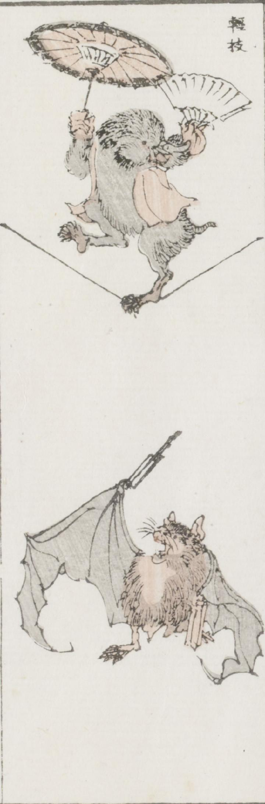

もぐら；モグラ，蝙蝠；コウモリ

赤いちゃんちゃんこを羽織ったもぐらが、扇子と唐傘を広げて手に持ち、綱渡りをしている。その下で蝙蝠が、閉じた扇子を逆さまに持った片手を上げ、声を張り上げている。
著作者：牧墨僊／出典：親書誌：U426_nichibunken_0097：滑稽洒落狂画苑；コッケイシャレキョウガエン／日付：2007／資源識別子：U426_nichibunken_0097_0020_0000
Copyright (c)2010- International Research Center for Japanese Studies, Kyoto, Japan. All rights reserved.